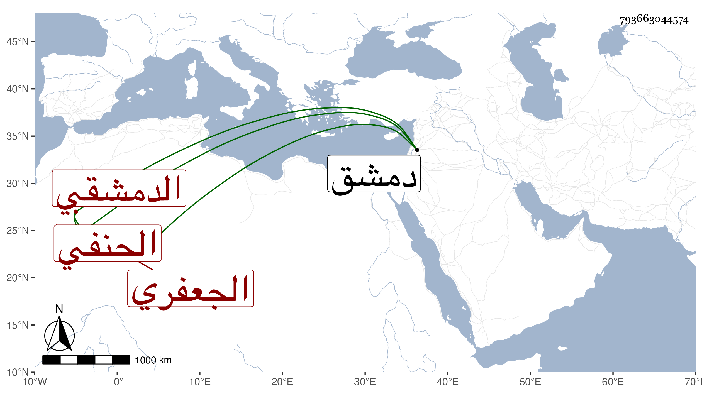

0902Sakhawi.DawLamic.ITO20230111-ara1.EIS1600.793663044574
Biography ID: 793663044574
401
محمد بن علي بن أحمد البدر أبو عبد الله بن أبي الحسن بن القاضي الشهاب أبي العباس الجعفري الدمشقي الحنفي . اشتغل وتميز وسمع في سنة سبع وثمانين وسبعمائة بلدانيات السلفي على التاج أبي العباس أحمد بن محمد بن عبد الله بن الحسن بن محبوب الشافعي وحدث بها قرأها عليه ناصر الدين بن زريق بحضرة الحافظ ابن ناصر الدين وغيره في سنة أربعين ووصفه في ثبته بالسيد الإمام العالم العلامة الأوحد القدوة ، وناب في القضاء بدمشق مدة طويلة عن ابن الكشك ثم استقل به مسؤلا ، وكان عفيفا عالما . مات في يوم الأربعاء سابع عشري صفر سنة أربع وأربعين ودفن بسفح قاسيون بالقرب من المدرسة المعظمية وكانت جنازته حافلة . أرخه ابن اللبودي ووصفه أيضا بالسيد العالم القاضي وكذا أرخه غيره وقال إنه ناهز الثمانين وخلف كتبا كثيرة نفسية تزيد على ألفي مجلد .
